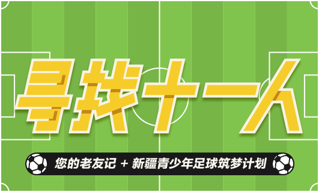

有一种青春，叫集体回忆。好久不见的老友，似乎联系都需要一个理由。在这个夏天的尾巴，趁世界杯热度还未散尽，让我们以爱的名义一起，送远方的孩子一个小小的足球，以此为起点搭建他们的足球梦。相信那些年，我们一起执念的中国足球梦，早已牵着我们的青春，走在路上。
寻找十一人——新疆偏远小学足球捐赠项目”由牛津大学中国留学生发起，通过京东公益凝聚更多力量一起为新疆全疆百所偏远地区的中小学募捐足球10000个。点击足球链接后便可跳转京东公益页面，您所捐赠的善款将直接在京东公益平台下单指定爱心足球，由京东物流将足球送往指定的远疆小学，并在新疆教育厅的监督下由快递员直接将足球交到孩子手中。相信这种便捷，简单，透明，可追踪的捐赠模式能让每一分善款落到实处，也希望这种方式能助力更多孩子实现他们的足球梦，中国的足球梦。
- 999
- 999
- 1000
特别鸣谢（排名不分前后）：
- 我要送球
- 邀请老友